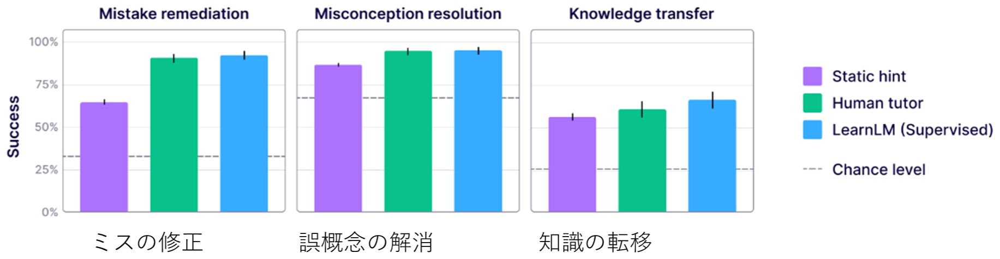
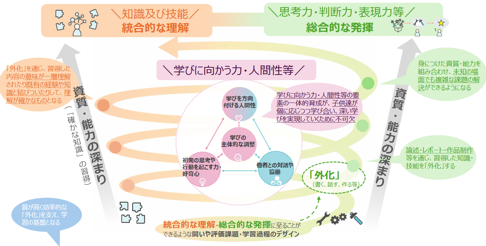

AI時代にこそ、登下校における自由で多様な実体験を守りつづけるには
子どもの登下校時の安全を確保する優れた取り組みは、各地で多様に展開されており、本ブックレットで取り上げられているものはその一部であるともいえます。こうした活動を、教育研究や政策動向に照らして、振り返ってみます。
教育用AIの到達点
デジタル機器はもちろんのこと、今後、子どもたちがAIの無い世界で生きることは想定されません。とりわけ、AIの中でも、教育用に開発されたAIは、子どもの学びに欠かせない存在になることが現実的になりつつあります。なお、教育用AIとは、通常、我々が用いるAIとは異なり、容易に正解を提示せず、子どもの試行錯誤や思考を促すAIを指します。
例えばGoogle社は、Geminiと学習科学の5つの方針（学習科学の五大原則：①能動的学習の促進、②認知負荷の適切な管理、③学習者の文脈への適応、④好奇心の刺激と探究の誘導、⑤メタ認知の深化）を組み合わせて、教育用AI LearnLMを開発しています。2026年現在、その到達点は、図1の様に報告されています。これを見ると、ミスの修正や誤概念の修正といった個別の知識・技能に関する学習ももちろん、知識の転移、すなわち学習済みの概念（A）を新しいトピック（B）に応用することにおいても、人間のチューターと（60.7）と比較したAI（66.2）の優位性は、＋5.5％であることが示されています。応用にあたっては、認知的架け橋（cognitive bridge）が伴う知的活動であり、単なるミスの修正を超えた「持続的で応用可能な学習」の証拠として注目することができると考えられます。

出典：Google, & Eedi. （2025）. AI tutoring can safely and effectively support students: An exploratory RCT in UK classrooms. Google. https://goo.gle/LearnLM-Nov25
このとき、教師はティーチャーというよりも、AIチューターと協働して（Teacher-AI Collaboration）、高度な教育を実現する学びのディレクターになるでしょう。
AIに代替されない能力の育成：探求の重要性
上記のような学び方が普及すればするほど、AIに代替されない能力の育成が重要になります。次期の学習指導要領では、これを総合的理解と統合的発揮（図2）と整理していますが、ここで注目されるのが、答えの無い課題に取り組む探究的学びです。探求的な学びによって、内化（知識を習得したり、それを既有の経験や知識と結びつけたりして、理解を確かなものにする）と外化（書く、話す、作る等の、総合的表現活動を通じて、自らの思考を可視化する）を繰り返しながら、らせん的に子どもの資質能力や課題解決能力は育成されます。

出典：中央教育審議会教育課程部会 教育課程企画特別部会（第16回） 配付資料（2026年8月4日）
更に、そうした学び方の基礎を支えるのが、幼少期からの手触り感のある「自由で多様な実体験」であるともいえます。実体験によって培われる非認知的能力（non-cognitive skill）が、認知的能力（cognitive skill）の伸長を促し、更に非認知能力を育成するという循環が、記号接地（symbol grounding: 知識が、具体的な生活経験やイメージと結びつき、多数の外の世界の事例を自ら抽象化できる状況）した力となり、子どもの能力育成につながると考えられています。
学校の授業、部活動等の課外活動、習い事等で忙しく過ごす子どもたちが、こうした体験を積む場として注目されるのが、他でもない登下校の時間です。緩やかに大人に見守られ、安全が確保されながらも、子どもが自由な発露で移動・活動できる時間は、日本の学校の財産でもあります。
地域の主体的な取り組みが民主主義社会の担い手を育成する
安心・安全な通学路は、学校任せにしていては持続できません。学校の先生方にも、働き易さと、ウェルビーイングの確保が必要です。また、自然災害の激甚化やクマなどの害獣被害が報告される中、教育政策の対策だけでは対応できないことも多く、首長部局、そして地域の方々が、「未来の市民」を健やかに育成するため、何ができるかを主体的に考え、体制を実装し、持続的に運用することが必要です。